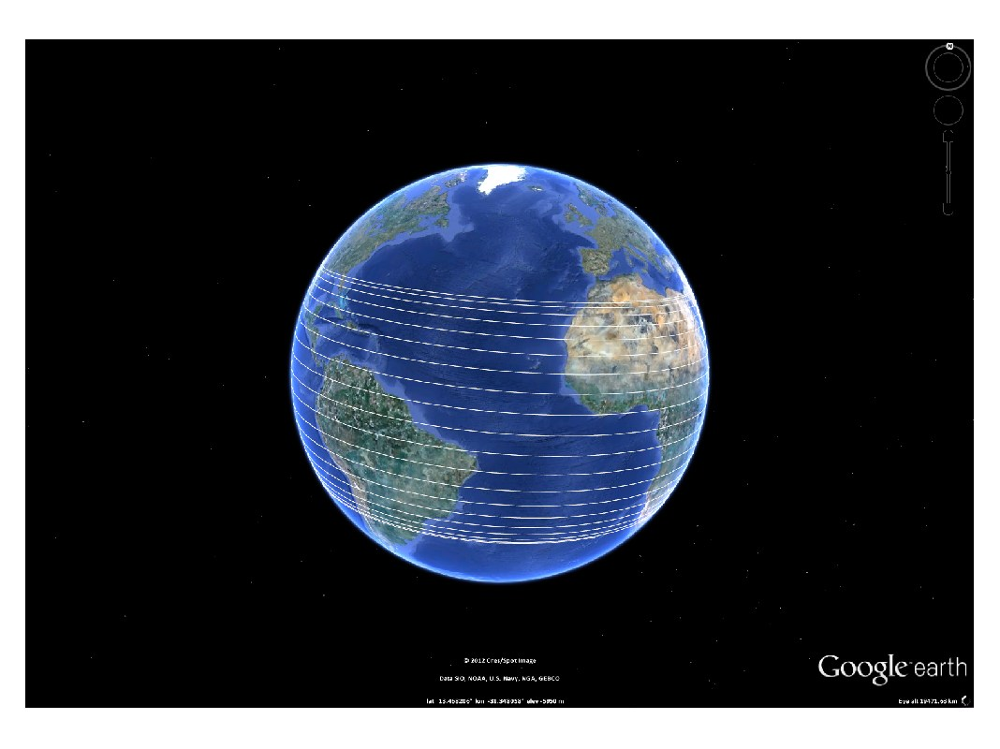
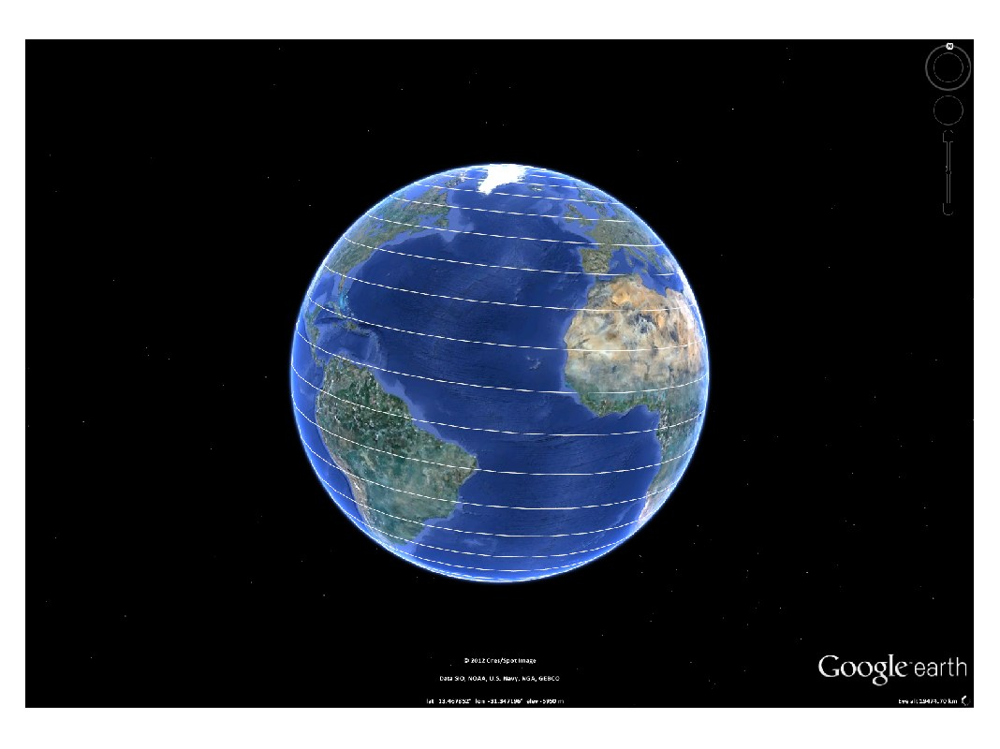

kml.clear
Clears the current kml file, removing any previous plots
Contents
Syntax
k = kml('kml title here');
--- any plot code here
k.clear;
--- new plot code hereDescription
kml.clear will delete any plot inside the current kml object, leaving it empty for future use. It will not delete any temporary file created on disk, such as images, nor will remove any .kml file previously saved.
Example
% Create a new kml object k = kml('my kml file'); % Plot a sample curve to the kml, and open it in Google Earth t = linspace(0,360,1000); k.plot(20*t, 30*cosd(t/2)); k.run; % Clear the previous contents k.clear; % Plot a new curve there, and open the new contents in Google Earth k.plot(30*t, 90*cosd(t/2)); k.run;
This is the first plot
This is the second plot after clearing the kml object
This file is part of the kml toolbox. Copyright 2012 Rafael Fernandes de Oliveira (rafael@rafael.aero)